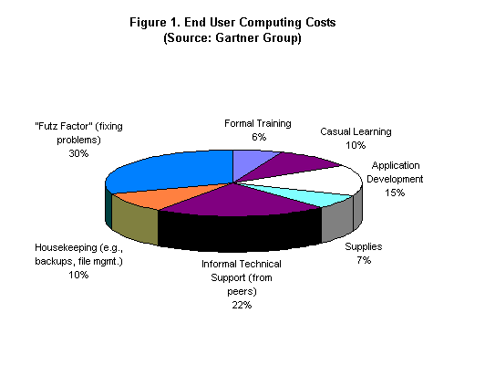

Issue Date: 01-06-97
Issue Number: 8.01
Category: IT COSTS
|
Are IT costs getting too out of control? Is there any way to
tame them? The Squandered Computer, the latest book from IT economics
authority Paul Strassmann, pops some of the myths of IT budgeting. We
assess some of Strassmann's latest ideas and discuss some budget
trends. In 1995, large corporations spent more on IT than they earned in
profits, according to Paul Strassmann. Globally, the overall profit
for nearly 13,000 organisations totalled $750 billion; he estimates
that IT expenditures for the same group amounted to over $1 trillion.
The numbers beg the question, are organisations getting their money's
worth out of their computers? Strassmann, a retired CIO for three major multinational
corporations and the US Department of Defence, has written several
books regarding planning, managing, and justifying information
technology investments. In his newest work, The Squandered Computer,
Strassmann argues that arbitrary control over expenditures is not
enough to guarantee decent results from IT investments. Instead, he
calls for organisations to measure the true value that IT projects and
acquisitions deliver over their useful - not their economic life,
using real figures, not guesses. The overriding theme? 'The era of
easy and generous spending on computers is coming to an end.' In this
report, we review Strassmann's latest work. WHERE'S THE BEEF? IT investments have hardly ever been money winners, according to
Strassmann. Prior to the 1980s, most systems were divorced from the
revenue stream of the corporation, consisting primarily of financial
systems that automated repetitive tasks, saving administrative costs.
In other words, the net contribution of such systems to the bottom
line was relatively minor. During the 1960s and 70s, few systems automated, or improved,
activities that added value, such as improving product, or contact
with the customer. Naturally, there are exceptions, such as systems
which processed syndicated market research data; however, it could be
argued that even these tended to save money in tabulating the returns,
rather than making possible new ways of using or finding intelligence
in the data. Stacks of print-outs may have been more thorough, but
they were hardly amenable to ad hoc decision support. Today, IT expenditures are exploding. According to a 1994 Morgan
Stanley report, since the early 1980s, IT expenditures have surpassed
that for basic industrial equipment. On one hand, that's a sure sign
of the emergence of the information economy. Another sign, Strassmann
says, is that IT expenditures keep growingÉ and growing. In
corporate America, IT spending is $4,970 per employee - a figure that
is over 60% higher than 1988, and one that in corporate budgets is
dwarfed only by employee health and pension benefits. Has anything been gained by this? Strassmann cites Steven Roach, a
Morgan Stanley economist, who notes that while corporations appear to
have higher productivity, the numbers tell only half the story. In
reality, the figures are more a reflection of the extent to which
companies are now outsourcing key business processes. Anecdotally,
Strassmann relates that the Big Three US automakers now outsource
between 55% - 65% of their parts. More precise data on the consequences of outsourcing come from two
studies cited by Strassmann, include a measure of revenue per employee
(which Strassmann compiled from his own database of 138 major US
corporations) and the level of economic value added (EVA) by the
largest industrial firms, compiled by Stern Stewart (who devised the
EVA metric) in 1996. According to Strassmann's data, revenue per
employee increased 26% from 1988-1994; meanwhile, EVA declined by
$150,000 per $1 million revenue during a similar (1987-92) period.
Clearly, companies are producing more revenue per employee, but adding
less value, due to outsourcing. Therefore, Strassmann concludes, computerisation is not necessarily
responsible for recent productivity gains in US industry. Meanwhile, IT investment life cycles are compressing. The toll is
especially bloody on the desktop where most hardware grows obsolete
after 3 years. Competition is driving many firms to make unwise IT
investments - a form of 'keeping up with the Joneses' syndrome. For
instance, says Strassmann, a bank feels compelled to install new
computing applications because its competitors already have.
Strassmann counters that the problem with this logic is that one would
have to prove that profits would have declined without the project.
The true measure, he says, is whether the firm could have boosted
profits with alternative, lower cost measures. Software 'decays' just like hardware. Although the process isn't
physical (software doesn't break down just because it gets old), the
changes in business processes, organisational structures, hardware,
and operating environments take their toll on software. Furthermore,
the pressure for rapid returns on IT projects results in a plethora of
short-term point solutions that are especially prone to
obsolescence. The results are twofold: an accumulating inventory of obsolete,
incompatible software, or software that must be constantly updated.
According to Strassmann, the average age of the software portfolio
of a Fortune 500 firm is 6 - 8 years. Replacing or upgrading such
software would easily double or triple the typical Fortune 500
organisation's annual IT budget, he claims. Are 'best practices' the answer? Strassmann is cynical.
'Programmers who programmed calendar routines over the past 30 years
believed they were applying the best software practices.' Since memory
and disk were expensive, those years were coded as compact two-digit
fields. According to Gartner Group, the results of these 'best
practices' will be a $200 - $300 billion repair job to fix the year
field problem before the year 2000. The same goes with adhering to ISO
9000 quality guidelines or the principles of the software engineering
Institute, added Strassmann. 'It does not always follow that superior
software will result from compliance with checklists that experts
believe to be the guarantors of excellence in the software process',
he noted. IT EXPENDITURE PATTERNS SHOW The only clear pattern is that organisations are spending more on
IT than they earn in profits. Strassmann's figures - nearly $1.1
trillion for world-wide IT expenditures versus $750 billion in
estimated profits - were culled from several sources, including a 1996
Wall Street Journal report on global IT purchases, Strassmann's
estimates of additional internal spending extrapolated from his sample
of 220 corporations, and corporate profit and loss figures on 13,000
organisations from Disclosure Inc. Strassmann comments that, given the growing size and scope of IT
projects, failures could seriously dent profits. 'Although the belief
still persists that computer applications may give companies
competitive advantage, what has changed is the recognition that
computer investments are indeed risky', he says. Consequently, CFOs
are raising the financial bar for IT projects, in growing cases
requiring paybacks in as little as 12-18 months. The result, says
Strassmann, is a growing short-term orientation to IT projects, which
he believes reduces the likelihood that any strategic benefits will be
delivered. The more probable result: companies will end up with a
proliferation of incompatible systems that rapidly grow obsolete as
the business or organisation changes (he calls them 'build and junk'
solutions). Not surprisingly, Strassmann doesn't believe IT expenditures are
improving corporate bottom lines. That runs counter to macro figures
of national economic growth. Between 1987-94, the US led the world,
both in GDP growth (at 8.1%), and the share of GDP spent on IT (2.8%).
By comparison, the closest runners up - Australia, Canada, and New
Zealand - enjoyed GDP growth rates of 7.0% and IT spending rates of
2.0% of GDP. Initially, IT expenditures appear to be consistent with
national GDP growth. Strassmann found no such correlation. For instance, during Strassmann's experience as CIO at Xerox in the
1970s, different business units with similar products, similar
competitors - and similar computing budgets - still had highly
variable financial results. Since then, Strassmann has built a
database comprising over 500 US companies, including public firms,
client organisations from his consulting practice, and other firms for
which he was able to obtain figures. He also referred to a study of IT
expenditures from the 200 largest Finnish firms. Neither sample showed
any connection between profitability and revenue - although Strassmann
did not provide specific data. But data can also play tricks. He cites a comparison of per capita
IT spending in the food industry; Quaker Oats, which in 1995 had the
highest return on equity (nearly 70%) of the firms studied, spent less
than 25% per capita compared to H.J. Heinz or Archer Daniels Midland
(which hovered at the 20% -30% ROE levels). It is difficult to draw
conclusions regarding Quaker's 'wise' use of IT resources, given that
the CEO recently resigned after a disastrous 1996. In Quaker's case, a major culprit was a disastrous acquisition of a
beverage subsidiary; the company lost touch with distributors who
marketed the product. The tempting question is: could an effective
sales and marketing decision-support IT investment have maintained
Quaker's profitability and preserved the CEO's job? ATTACKING THE OLD MYTHS Sacred Laws: Strassmann pokes holes in several popular
premises regarding IT economics. For instance, 'Grosch's Law', named
after a former IBM researcher and National Bureau of Standards
computer technology director, stated that computing power increases at
the square of its costs - a concept that promoted economies of scale.
It was a concept that was especially popular until the 1980s.
Strassmann responded that the concept merely reflected IBM's pricing
schemes, which during the heyday of the mainframe, were practically
unchallenged. He dismissed the 'law' as 'nothing but a reflection of
IBM's marketing strategy.' Back to the future, today's better-known 'Moore's Law', which holds
that microprocessing power doubles every 18 months, has become a
Trojan Horse for software vendors, claims Strassmann. As computing
power increases, what otherwise seems like a bargain is quickly
consumed by larger, more complex software. Admittedly, Strassmann does
not elaborate here, although a quick comparison of the storage and
computing requirements of Office 95 and Office 97 adequately proves
Strassmann's point. 'Intel gives and Microsoft takes away', he
concludes. It could be argued that more compact predecessors to Office 97
carried similar price points ($300 - $500/seat, individual street
price, depending on whether the full suite was ordered and whether the
suite is a new purchase or competitive upgrade); it could be even
argued that new, desktop suites are for all practical purposes
cheaper, since they are bundled with major brand Pentium machines.
Furthermore, new capabilities, such as Microsoft's incorporation of
native TCP/IP capability, could be said to make networked computing
cheaper. Strassmann does not address these arguments; he would
probably consider them irrelevant anyway, given his reference to
Gartner Group's $8,000 - $10,000 annual PC fat client cost figures
(which reflect the fact that fat clients are complex to configure,
maintain, and while the fat client software requires significant end
user training and hand holding). Budgeting Guidelines: Target number one is personnel. He
cites the dilemma of companies that outsource, such as the
manufacturer which primarily resells but does not outsource its
information workers (e.g., sales, marketing, budgeting, and corporate
management). If the company was apportioning IT expenses based on
employee counts, it would have unnecessarily reduced IT budgets. There is one minor problem with Strassmann's analogy. As
manufacturing gets more computerised, more and more manufacturing
workers are joining the information workforce. Nonetheless, this is a
case of the right point, wrong example. Strassmann is stating that
information technologies be apportioned, not on a per capita basis,
but by the value that is added by organisation business processes. In
so doing, it will be easier to estimate how IT increases the
efficiency of processes, that in turn contribute to the bottom
line. He strikes down another metric - that of apportioning IT
investments as a percentage of revenue - to make the same point. By
pegging IT as a percent of corporate revenue, it is essentially
positioning IT as a tax without justifying what it is being spent for.
And, he singles out trade magazines, such as Information Week and
Computerworld, which annually publish profiles of the top corporate
users of IT based, in part, on the company's percent of revenue
invested in IT. He believes that such metrics glorify spending for its
own sake. Therefore, a company which is caught in an exorbitant
outsourcing or client-server migration contract might look favourable
in the magazine rankings because it is spending a higher percent of
revenue on IT than a similar firm which negotiated its contracts more
wisely. Another way not to invest is by looking at discounted cash flows.
Hardware and software vendors, he argues, want to get paid now, and
not on an inflation-adjusted basis. In large part, this is due to the
extreme volatility and short life-cycle of too many computer
investments, especially at the desktop level. Admittedly, inflation
eats into the value of an asset; in the IT world, obsolescence eats at
it more. Therefore, the market value of a short-lived IT asset will
probably be less than its inflation-adjusted counterpart. Put another way, according to a 1994 Morgan Stanley report, in
actual dollars, US business is spending more on IT than on basic
industrial equipment. This has been the case since 1981-2. 'The gross
IT put in place in the last decade had an extraordinarily short life,
whereas modern basic industrial equipment now has greater longevity
because of its greater reliability', Strassmann notes. After a lull in
the late 80s, the trend grew even more pronounced with the emergence
of client-server technology in 1991. (For the record, Strassmann
claims that client-server is a bit of a misnomer, since, 'there have
always been clients and serversÉ The client-server surge is
nothing more but the continuation of a much older trend toward
dismemberment of the centralised data processing organisation.' He
terms the emergence of so-called client-server as 'a testimonial that
the worshippers of Moore's Law have displaced the adherents to
Grosch's Law.') Strassmann adds that many IT expenses are either unnoticed or get
swept under the carpet. First, there is the issue of 'stealth
spending.' These 'stealth costs' may include under-utilised PCs that
are installed as employee perks (for personnel of given status),
informal end user support (what some analyst groups call 'shadow IT'),
training hours for business (non-IT) personnel, and so on. Strassmann
cites Gartner Group estimates of $5,000 for end user computing
operations (see Figure 1). (Note: One of the areas cited by Gartner,
the 'Futz Factor', is the target of a major Microsoft service
offering, 'AnswerPoint'. The costs might be petty cash, for instance
$55 - $195 per incident, or part of a major line item expenditure,
where a 'package' of 75 such incidents paid in advance costs
$9,995.) 
Some costs seem obvious. Telecommunications is often handled
outside the IT organisation, or by non-IT specialists. Consequently,
costs get underreported. For instance, when Computerworld co-operated
with Network World to publish a list of the top 25 users of
telecommunications technologies, it found that average
telecommunications costs (at 26% of IT budgets) were roughly four
times higher, on average, than figures reported in Computerworld's own
'Premier 100' company IT profiles. The difference? While the 'Premier
100' figures were primarily reported by CIOs, the Network World
figures were provided by telecommunications managers. In fact, Strassmann argues that IT expenditures should not be
restricted to computing. To gain a full picture, it should encompass
all 'information handling' functions, many of which are conducted
outside IT. While telecommunications is the obvious example, others
include copying, printing, videoconferencing, and so on. Intangible Benefits: Strassmann rejects the notion that IT
projects should be justified on 'soft' criteria. For instance, he
attacks Information Economics, which relied almost entirely on
subjective scoring of the benefits and risks of prospective projects.
He also labels as 'astrology' methods such as 'Analytical
Hierarchies,' which dispenses entirely with numerical scoring,
replacing it with subjective opinions (e.g., poor, fair, good, very
good). The only justifiable cost justification methods, says Strassmann,
are those techniques that quantify risks and benefits in hard dollars.
Be wary of claims that IT projects will lower operational costs. In
many cases, he says, the IT solution may not eliminate the cost, but
shift it somewhere else inside (or in some cases, outside) the
organisation. For instance:
However, cost shifting can sometimes be beneficial - especially if
the business unit or organisation which receives the added
responsibilities is able to perform the function more efficiently. For
instance, Wal-Mart's supplier managed inventories reduce the overall
cost of keeping Wal-Mart's retail shelves stocked. Fantastic ROI: Strassmann critiques published competitions
that often tend to hype the results. He cited the example of a 1995
CIO Magazine award to K Mart for a computerised inventory system that
supposedly saved $365 million. Strassmann believes that smart
inventory managers, not the computer project, deserved the award.
(Incidentally, Strassmann adds, immediately following the award, the
CIO resigned, and 25% of the IT staff was made redundant after massive
deficiencies in the system were discovered.) Instead, Strassmann says, the ROI of an IT investment is the
difference in costs between the solution and a less expensive
alternative. Don't attribute benefits which were due to other
factors. Outsourcing: Strassmann is very cynical about the benefits
of outsourcing. 'Corporations that outsourced more than 60% of their
IT budget tended to be economic losers', he said, citing his own
informal studies of well-known outsourcing contracts, which showed
that most of the firms involved had negative EVAs for at least three
years prior to their outsourcing contracts. He concludes that
large-scale outsourcing, as practiced, is more a fancy term for
downsizing, and not a miracle cure. Strassmann argues for outsourcing
contracts that charge by transaction types and levels; he believes
such contracts would introduce real competition between outsourcing
providers and internal IT organisations and contribute positively to
the bottom line. A PROACTIVE BUDGETING APPROACH Given the range of problems which Strassmann has described, his
solutions are almost anti-climatic. They sound more like ordinary
common sense that should be obvious to any IT executive. For instance,
Strassmann says there is no best way or magic recipe to IT budgeting.
Every company and every sector is different. Regardless of whether a
company relies on centralised mainframes or distributed client-server
networks, buys off-the-shelf applications or develops in house, no
single strategy is a formula for success. His recommendations
include:
DON'T TRY THIS AT HOME True to the book's title, The Squandered Computer provides
sufficient shock value to make IT executives question the usual
assumptions regarding IT budgeting, cost justification, and project
management. And, in fact, Strassmann presents compelling data to
demonstrate that, based on conventional criteria, IT projects as they
have been traditionally managed are extremely poor investments. In most cases, they are treated as a necessary cost of doing
business, and in some cases, as a me-too strategy for keeping up with
the competition. There is little question that traditional IT practices and
technologies, with their rate of obsolescence, poor history of
documentation, and alarming tendencies to foster scorn for 'not
invented here' solutions, have significantly dented the profitability
of many enterprises. Strassmann cites a variety of studies and sources; the book's
greatest fault is that the sources of the data, the means by which the
data was analysed, and the results, are not always clear. The most valuable concept that Strassmann introduces is the notion
of residual value. He justly attacks 'build and junk' short-term
solutions, and in fact, the evidence that older applications and
platforms still work fine, thank you, is not hard to find in most
organisations. The age-old question is how to quantify residual value. Strassmann
ventures a formula (see Table 1) which takes the initial cost of
hardware, software, application development, and training, and
subtracts depreciation for each. Identifying the upfront value is the
easy part; the challenge is assigning an appropriate depreciation
value. The accounting profession and government tax codes offer plenty
of depreciation schedules based on the notion of reselling assets, but
not on their innate usefulness to the organisation itself. Strassmann provides some sample depreciation charts. However, the
book could have used a more detailed explanation. We believe that it
would have revolved something around the notion of the avoided cost of
rebuilding applications, retraining personnel, or buying new hardware.
Towards that end, we would love to see a Strassmann sequel that
explains exactly how to do it. |
Table 1. Strassmann's residual value formula.
Change in Information Technology Assets =
(Equipment Acquisition - Equipment Depreciation)
+ (Development Acquisition - Development Depreciation)
+ (Software Acquisition - Software Depreciation)
+ (Training Acquisition - Training Depreciation)
Order from:
The Information Economics Press
P.O. Box 464
New Canaan, CT 06840-0264
USA
Tel: (800) 800-0448
Fax (203) 966-5506
http://www.strassmann.com
426 pages, 66 illustrations
Price $49 plus $4.50 for shipping and handling via UPS in the continental US.
Any other shipping at cost.
North America:
Teresa White
+1 203 973 6700
teresa.white@metagroup.com
http://www.computerwire.com/cfus/Rest of the World:
Dominic Sharp
+44 (0)171 468 0800
doms@computerwire.co.uk
http://www.computerwire.com/cf/